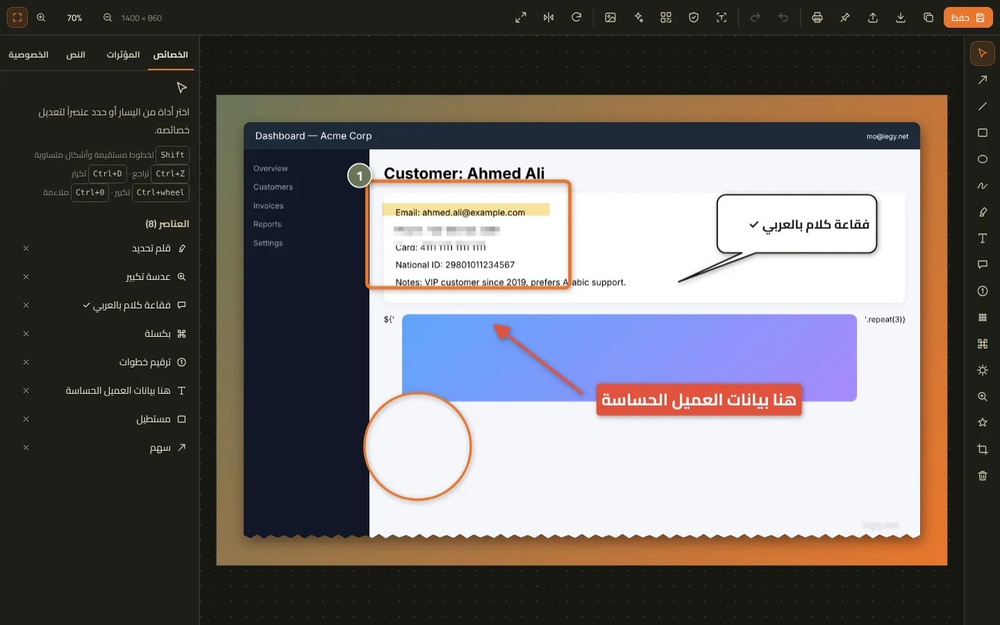
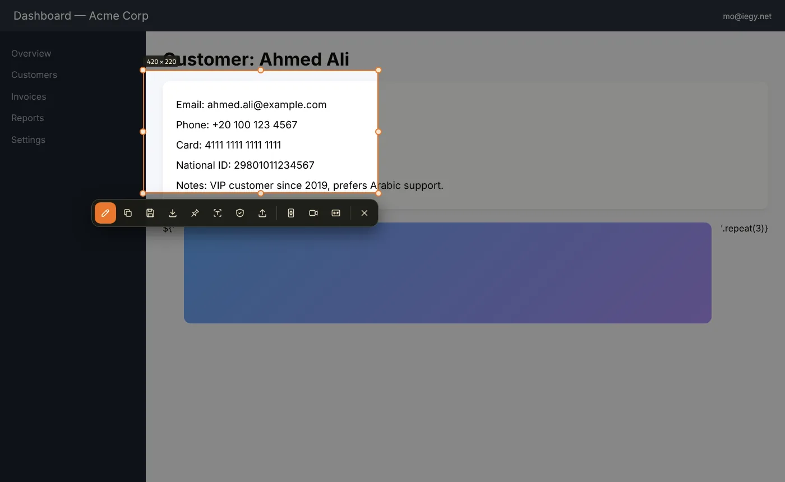
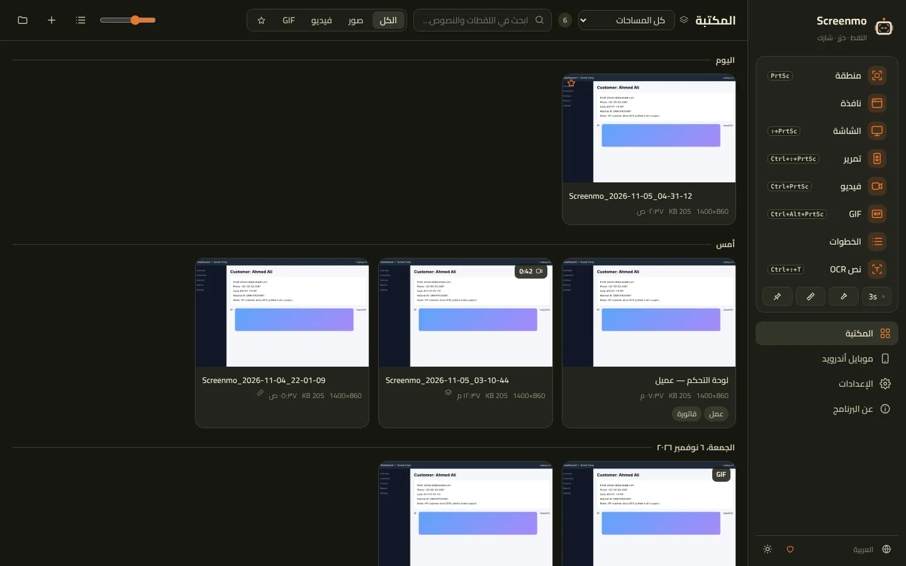
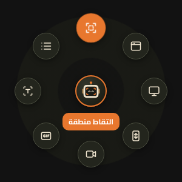

التقاط ذكي
منطقة، نافذة، الشاشة كاملة، كل الشاشات، آخر منطقة، والتقاط مؤجّل. بيكتشف النوافذ والأزرار والعناصر اللي جواها تلقائياً، مع عدسة تكبير ومقابض دقيقة بالبكسل.
Screenmo بيلتقط أي جزء من الشاشة أو نافذة أو صفحة طويلة كاملة، ويسجّل فيديو و GIF — ومعاه محرر قوي بيكتب العربي صح، بيقرأ النص من الصور، وبيخفي البيانات الحساسة لوحده.

من لقطة سريعة لحد دليل كامل خطوة بخطوة.
منطقة، نافذة، الشاشة كاملة، كل الشاشات، آخر منطقة، والتقاط مؤجّل. بيكتشف النوافذ والأزرار والعناصر اللي جواها تلقائياً، مع عدسة تكبير ومقابض دقيقة بالبكسل.
تمرير تلقائي أو يدوي ودمج ذكي بيحافظ على الرأس الثابت مرة واحدة — وإضافة للمتصفح بتلتقط صفحات الويب كاملة بدقة.
أسهم، أشكال، قلم، قلم تحديد، نص، فقاعات كلام بـ5 أشكال، ترقيم خطوات، تمويه، بكسلة، إضاءة منطقة، عدسة تكبير، ملصقات، قص، تدوير وتغيير حجم — وتقدر ترجع تعدّل أي وقت.
إطار، ظل ناعم، حواف مستديرة، حافة ممزقة، خلفيات متدرجة وعلامة مائية — أي لقطة تبقى جاهزة للعرض.
انسخ النص العربي والإنجليزي من أي لقطة بدون إنترنت، وابحث في مكتبتك كلها بالنص اللي جوه الصور.
البريد، أرقام الهواتف، البطاقات البنكية، الرقم القومي، IBAN، مفاتيح API والوجوه — بتتخفي بضغطة واحدة ومجاناً.
سجّل بصوت النظام والميكروفون والكاميرا، مع إبراز النقرات والرسم على الشاشة أثناء التسجيل، وبعدين قص وسرّع وادمج المقاطع وصدّر MP4 أو GIF أو WebM.
كل نقرة بتتحول لخطوة عليها علامة، و Screenmo بيعملها دليل جاهز تصدّره PDF أو Word أو HTML.
نسخ، حفظ PNG/JPG/WebP/PDF، طباعة، تثبيت على الشاشة، أو رفع على Imgur و S3 و Cloudflare R2 و FTP أو سيرفرك، والرابط بيتنسخ فوراً.
زر صغير بوش مو فوق كل النوافذ، تقف عليه تطلع قائمة دائرية بالاختيارات اللي تحددها، بالإضافة لاختصارات الكيبورد وقائمة شريط المهام.
كل لقطة بتتحفظ تلقائي، ونظّمها بمساحات عمل (لكل عميل أو مشروع) ووسوم ومفضلة.
وصّل الموبايل بالكابل والتقط صور وفيديو لشاشته مع معاينة مباشرة — وتفتح في المحرر على طول.
قِس المسافات والزوايا بالبكسل وانسخ أي لون من الشاشة — مفيدة جداً للمصممين.
النسخ الجديدة بتوصلك بضغطة واحدة، وفيه نسخة محمولة بدون تثبيت.



| Screenmo | Screenpresso مجاني | Screenpresso Pro | |
|---|---|---|---|
| السعر | مجاني | مجاني | $29.99 |
| فيديو بدون علامة مائية | ✓ | ✗ | ✓ |
| صوت النظام في التسجيل | ✓ | ✗ | ✓ |
| استخراج النص OCR | ✓ عربي وإنجليزي | ✗ | ✓ |
| الإخفاء التلقائي للبيانات | ✓ | ✗ | ✓ |
| نص عربي سليم في المحرر | ✓ | — | — |
| مسجّل الخطوات | ✓ | ✗ | ✗ |
| الرسم أثناء التسجيل | ✓ | ✗ | ✗ |
| مولّد مستندات PDF / Word | ✓ | ✗ | ✓ |
| التقاط من أندرويد | ✓ | ✗ | ✓ |
| مساحات عمل متعددة | ✓ | ✗ | ✓ |
حسب صفحة الأسعار الرسمية لـ Screenpresso. الاسم علامة تجارية لأصحابها.
آخر إصدار: —
البرنامج لسه مش موقّع رقمياً. اضغط «More info» وبعدين «Run anyway». ده بيحصل أول مرة بس.
في ويندوز 11: الإعدادات ← إمكانية الوصول ← لوحة المفاتيح ← اقفل «استخدام زر Print Screen لفتح أداة القصاصة». أو غيّر الاختصار من إعدادات Screenmo.
الإعدادات ← النص والخصوصية ← «تثبيت العربية» بيضيف حزمة القراءة العربية من ويندوز نفسه. والبرنامج فيه كمان محرك مدمج بيشتغل بدون إنترنت.
أيوه — كل الخصائص، بدون علامة مائية وبدون حد للوقت. ولو البرنامج فادك تقدر تدعم التطوير من تحت.
في مجلد الصور\Screenmo افتراضياً وتقدر تغيّره. والنسخة المحمولة بتحفظ كل حاجة جنب Screenmo.exe.
Screenmo مجاني للجميع ومن غير إعلانات. دعمك بيساعدنا نطلع نسخ الماك والأندرويد ونضيف خصائص جديدة.